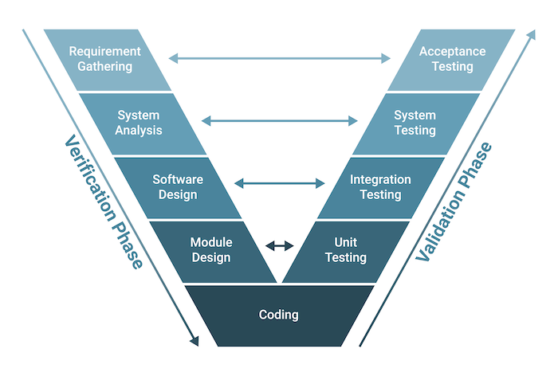

V-Model ehk V-kujuline arendusmudel on tarkvaraarenduse metoodika, mis on edasiarendus klassikalisest Waterfall-mudelist. V-Modelis esitatakse arendusprotsessi ja testimist V-kujulise diagrammina, kus vasakul küljel paiknevad arendusetapid ja paremal küljel neile vastavad testimise etapid. See mudel rõhutab, et iga arendusetapiga peab kaasnema vastav testimisplaan, mis viiakse ellu kohe pärast arenduse vastava osa valmimist. V-Model sobib hästi projektidele, kus nõuded on algusest peale hästi määratletud ja stabiilsed, kuna see võimaldab tugevat kontrolli ja kvaliteeditagamist igas etapis.
| Positiivsed küljed | Negatiivsed küljed |
|---|---|
| See on väga distsiplineeritud mudel ja faasid viiakse läbi ükshaaval. | Suur risk ja ebakindlus. |
| V-mudelit kasutatakse väikeste projektide jaoks, kus projekti nõuded on selged. | See ei sobi keerukate ja objektorienteeritud projektide jaoks. |
| Lihtne ja hõlpsasti mõistetav ja kasutatav. | Aeganõudev: V-mudel võib olla aeganõudev, kuna see nõuab palju dokumentatsiooni ja testimist. |
| See võimaldab projektijuhtimisel edenemist täpselt jälgida. | Liigne tuginemine dokumentatsioonile: V-mudel paneb suurt rõhku dokumenteerimisele, mis võib viia dokumentatsiooni liigsele sõltuvusele tegeliku arendustöö arvelt. |